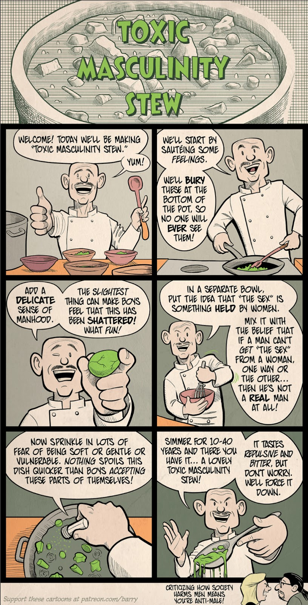

What is Mental Health?
Mental health is our emotional, psychological, and social well-being. It encompasses how we think, feel, and behave, and determines how we respond and cope with situations. In cases where our mental health is deteriorating, we tend to behave in a harmful manner, have a destructive pattern of thought, and are plagued by negative emotions. As a result, our daily lives become more unstable; therefore, mental health is an essential aspect of health that we need to maintain to be the best versions of ourselves. However, a negative stigma surrounds mental health.

What is Meant by “Men's Mental Health?”
Speaking of stigma, there lies some prejudice and stereotypical ideologies deep-rooted in society when it comes to mental health, in cases of both genders. Despite that, men are dealt with a lower hand because they rarely speak up about any struggles, giving most the impression that they do not suffer. This is evident when faced with the statistics of men to women who participate in therapy, we find the majority are women.
As a result, we must advocate for the importance of men’s mental health and destigmatize some attributions that are labelled “manly,” when in reality are not only toxic but harmful. Movember, the men’s mental health movement, aspires to reinforce the humanity of men and inspire a change in mentality. This change of mentality aspires to unshackle men from the expectations placed on them by destructive societal standards and disapprove the reasons why men do not seek help.
Why Do Men Not Seek Help?
To inspire a reform of mental attitude, we must better understand why men do not seek help and identify the core reason that has allowed this mindset to persist for this long. Correspondingly, Priory surveyed 1,000 men in the UK and found that 40% have never spoken to anyone about their issues.
The reasons behind the lack of reaching out for help:
- Being “too embarrassed” to speak about it
- The negative stigma that surrounds this topic
- Not wanting to be a burden
- Not wanting to admit that there is a need for support
- Not wanting to appear weak
- Not having anyone to talk to
Primarily, the spread of toxic masculinity across generations has contributed to the persistent absence of a support system that would allow them to be vulnerable, which has led to an increase in suicide amongst men, 77% of all suicides are completed by men.

What is “Toxic Masculinity” and Its Impact on Mental Health?
Toxic masculinity is a cultural ideology that is reinforced in men from a young age, resulting in a specific and toxic pattern of behaviour, thought, and emotional capacity. According to Kevin Foss, it focuses on three core concepts:
- Being tough: Placing strength and aggression as the essence of a “man.”
- Completely erasing anything related to femininity: Femininity is the physical representation of emotions; consequently, masculinity means rejecting compassion, nurturing emotions, and domesticity.
- Patriarchy is the best hierarchy: Men are above everything. They are deserving of all status, power, money, and influence.
Speaking up about struggles and getting the help you need goes against the core values of toxic masculinity, creating members of society who are incapable of being self-aware, who tie their worth to materialistic objects and affections, and who do not view the power in being humans and having these complex emotions.
How Does Not Seeking Help Impact Those Around You?
As previously stated, our behavior, thinking, and emotions are closely linked to one another, meaning a disruption in one aspect will reflect in the others. The issues that arise from a deteriorating mental health can create tension, uncertainty, and stress impacting your family, friends, and anyone in your close vicinity. As the way you behave, think, and feel, has a detrimental impact on those you love.
In some cases, you may hurt them unintentionally in a fit of anger or sadness by spouting harmful words, or by thinking that you don’t want to burden those around you and begin to push them away. Our social relationships are a vital factor in our journey to a steady and well-balanced mental health; therefore, when our mental health is not stable, we must seek help to maintain our relationships.
What Can Men Do When Faced With Mental Health Difficulties?
- Try to do some relaxation techniques - breathing exercises, meditation, and journaling.
- Being in nature and exercising - disconnecting from the technological world, as well as moving your body releases dopamine and endorphins, which helps boost your moods.
- Speaking to someone you trust about the problems plaguing you can be the first step in accepting help.
- Focusing on yourself and trying to be more self-aware.
- Understanding that it is okay to not be okay.
What Can Women Do When Men Are Faced With Mental Health Difficulties?
- Acknowledging that their symptoms may not look like yours.
- Creating a safe environment in which they feel comfortable being vulnerable and having conversations.
- Be careful of the language used when speaking of these sensitive topics.
- Share your experiences to make them feel they are not weak or isolated.
- Spend quality time with them and remind them that their worth is not tied to any materialistic object; their worth comes from within.
Additional Resources